漫画版
第四話「同じ傷」
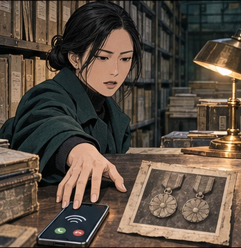
翌日・資料室。メダルの記録を調べていると、鑑識の瀬尾から電話が来た。
瀬尾さん。蔵の市の写真なら、手元にあります。
鑑識スタッフが保管棚から押収品を出し、瀬尾に渡す準備をした。
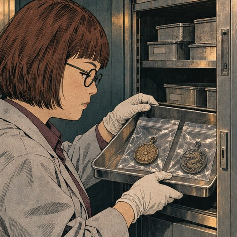

鑑識室
別件の押収品に花柄が二枚。写真を送る。
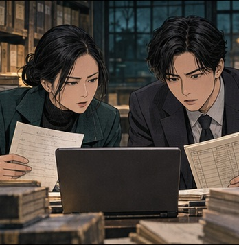
購入四枚、受取二枚。手元に渡っていないのは二枚でしたね。
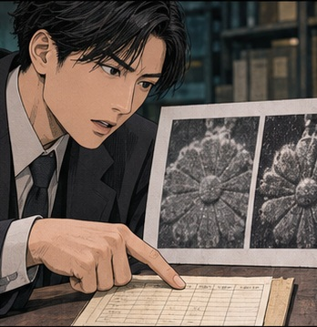
押収品も二枚。でも、不足分と同じ品でしょうか。
1 / 4
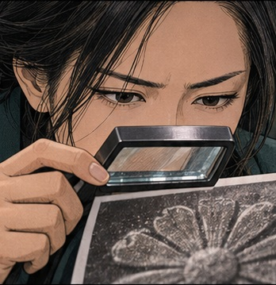
まず収集家に渡った方の、花柄の一枚。縁を大きくしてみよう。
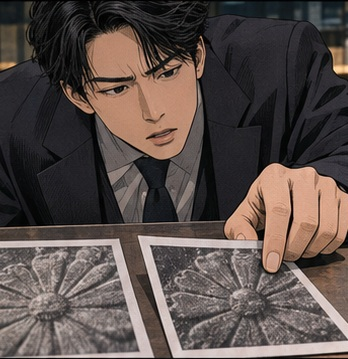
押収品の左右も、縁を拡大して並べましょう。
2 / 4

購入記録074 ／ 収集家に渡った品
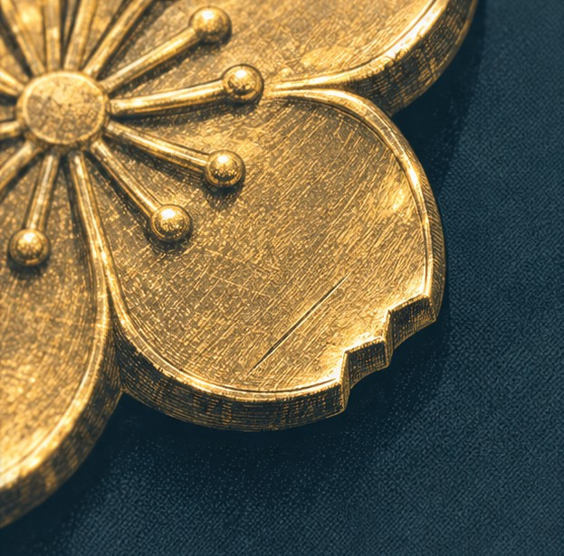
押収記録082 ／ 左の品
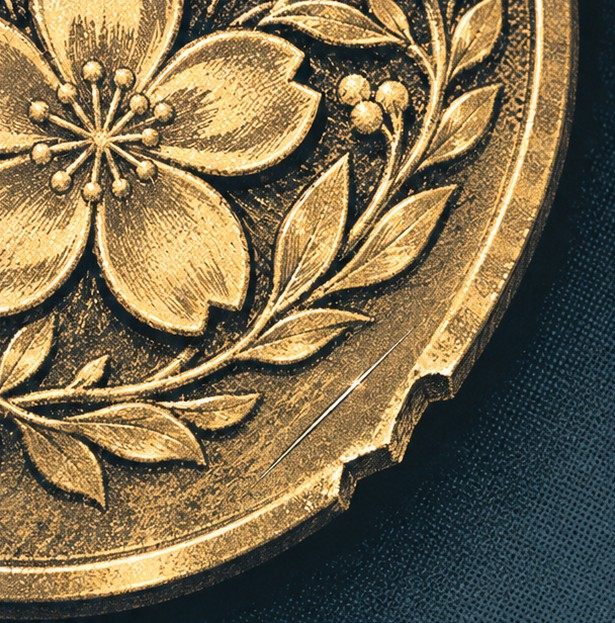
押収記録082 ／ 右の品
押収品・左
押収品・右
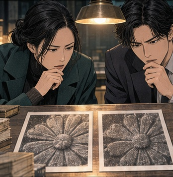
三枚とも、傷の傾きも欠けの段も同じ場所にある。
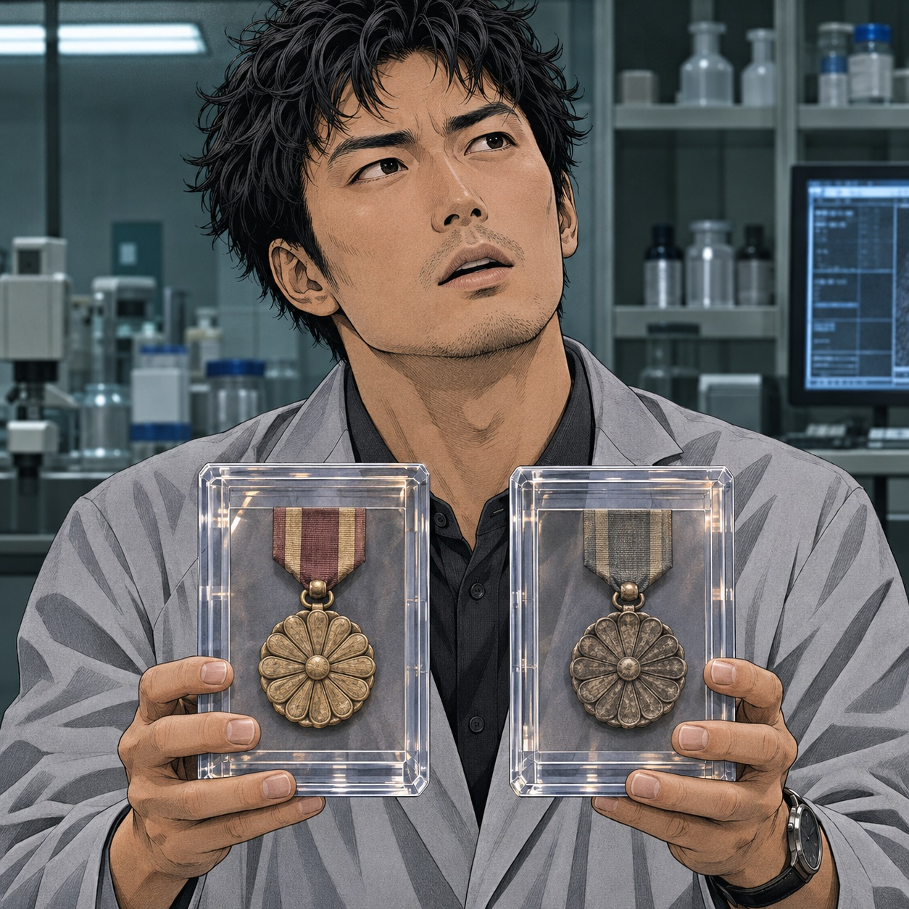
再び鑑識室
現物は別々の袋に一枚ずつ。購入記録と結びつけられそうか？
現物を傷つけないよう、瀬尾はルーペを縁へ近づけた。
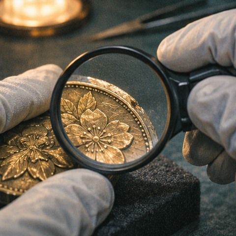
3 / 4
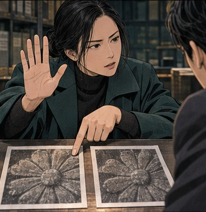
型についた傷なら別々の品にも写る。品ごとの傷なら、行方を追う手掛かりになる。現物を見て。
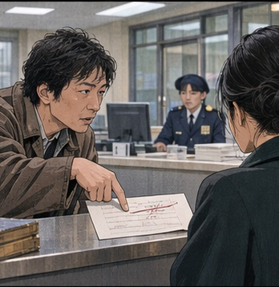
以前、訂正前の記録が別部署から戻ってきた。
訂正したほうが共有されるんですよね。
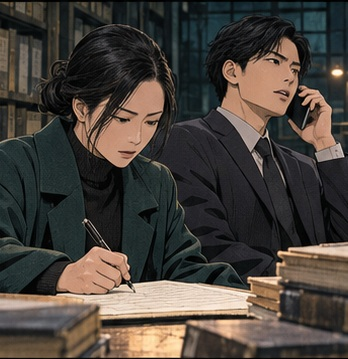
保管票 同形の欠けと傷。現物鑑定を要請。
出所の照会もお願いします。
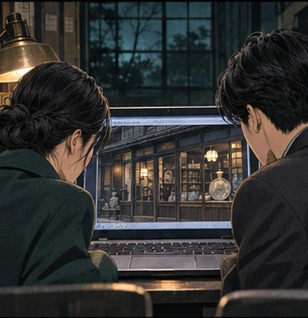
鑑定を待つ間に、元の売り場写真を見よう。ケースの周りにも手掛かりがあるかも。

4 / 4